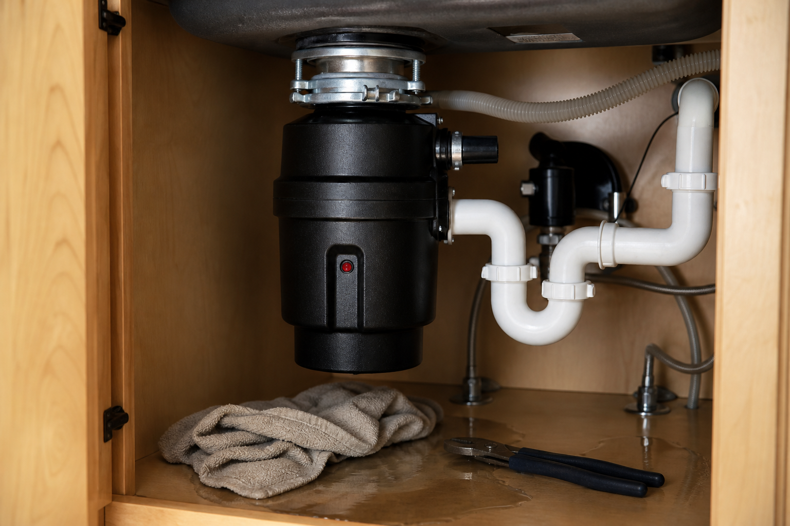

Choose your trade
Select Plumbing — under-sink and disposal help.
Plumbing help · Live video
You tried Google. You watched YouTube. Maybe you asked AI. Still humming, still jammed, still won't drain. Plumber quotes start at $150+. You just want someone to look at your disposal, your reset button, your under-sink setup — tonight.
Not a subscription. Not a $150 truck roll. One call when DIY research fails.


Patent pending · Anonymous by design
Patent Pending Methods and Systems For Connecting Users With Subject Matter Experts. The patent is for an encryption process creating a total anonymous video connection for both users and Subject Matter Experts.
Millions of homeowners run into garbage disposal problems every year. Most are fixable. Then:
Manufacturer support is slow. Forums are guessing. A plumber is scheduled days out — and costs more than you'd expect for a jam.
You don't need a subscription Q&A service. You need one human on video for one problem — right now.

After you download the app — three steps to get unstuck on live video.
Select Plumbing — under-sink and disposal help.
Garbage disposal not working — pick the closest match to what's stuck.
Connect with a Subject Matter Expert on live video. Show your disposal, switch, and under-sink setup — get guidance on what to try next or a clear answer on whether to fix it yourself or call a licensed plumber.
| Plumber service call | YouTube | Task Monsters | |
|---|---|---|---|
| Cost | $150–$400+ | Free | $9.99/call |
| Your exact unit | Scheduled visit | Generic model | Live video, your disposal |
| Subscription | N/A | Free | Never |
| Stuck tonight | Tomorrow or days out | Search 20 videos | ~60 sec goal · up to 10 min |
We're not a licensed plumbing company and we don't come to your house. For $9.99 once, a Subject Matter Expert connects on live video, sees your disposal and under-sink setup, and walks you through what to try next.
That means guidance and diagnosis on video — clearing a jam, checking the reset, spotting a leak source, or deciding if the unit needs replacing. Not guaranteed repair, not parts included, not on-site licensed trade work.
If your situation needs a licensed plumber — major leak, electrical fault at the switch, or a unit that must be replaced in code — we'll say so on the call. $9.99 beats paying $150+ just to learn that.

Mike flipped the switch. Loud hum, no grinding. Reset button popped again. YouTube showed three different models. Plumber quote: $175.

A Subject Matter Expert spotted a jam on video and walked Mike through clearing it. Grinding again in 20 minutes. $9.99.
Free self-check · 2 minutes
8 quick questions — no email required. See your match score first.
Locked reward · fit matches only
20% off your first rescue call
Web only — not part of the app. No email required to see your score.
Often yes — for jams, reset issues, and simple troubleshooting. They guide you while you show the unit under the sink on live video. If the fix needs on-site licensed work or a full replacement, they'll tell you on the call.
We'll say so. Better to find out for $9.99 than after you've paid $150+ for a service call that could have waited — or that confirms you need one.
Related but different. This page is for garbage disposal not working — humming, jammed, won't start, won't drain. Our leak page covers active drips and pipe connections under the sink.
Yes — that's the rescue app idea. Most people search Google, watch videos, or ask AI first. Task Monsters is for when that still leaves you stuck on your exact unit.
Patent Pending Methods and Systems For Connecting Users With Subject Matter Experts. The patent is for an encryption process creating a total anonymous video connection for both users and Subject Matter Experts.
Our goal is about 60 seconds to reach a Subject Matter Expert. Depending on demand and topic, wait times can run up to about 10 minutes.
No. The quiz is a free self-check on this web page only. The app is where you choose your trade, topic, and Subject Matter Expert to get rescued on live video.
No. Download the app free. You pay $9.99 only when you start a call.
Download Get Task Monsters. Choose Plumbing → garbage disposal → a Subject Matter Expert. One call. $9.99. No subscription.